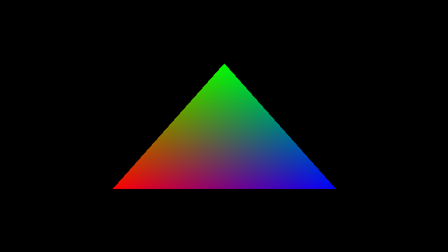
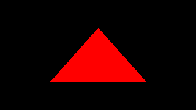
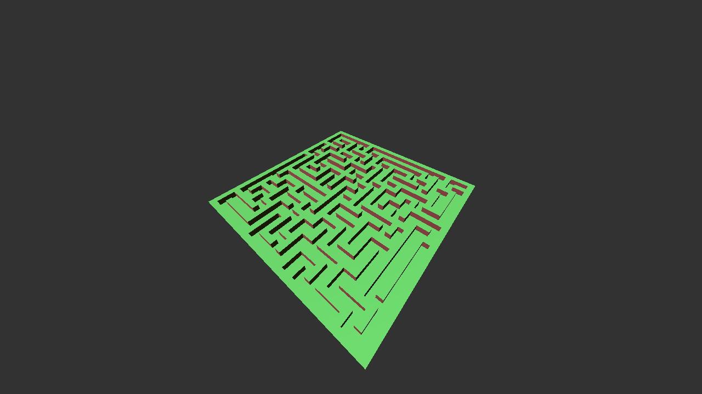

Computer Graphics from scratch
Any sufficiently advanced technology is indistinguishable from magic - Arthur C. Clarke
I have been doing computer graphics for quite some time, so I am not a total beginner at it. The main problem was that I skipped some theoretical parts and didn’t try to understand them (admittedly, mathematics). Instead, I jumped here and there to produce pretty-looking renders. So I decided to start computer graphics from scratch, where the goal is to try to learn and understand as much as possible. So, I thought writing a CPU rasterizer was a way to achieve it. As it will help me learn and understand:
- How APIs like OpenGL, Metal, etc works underneath.
- How to structure/architect renderer properly, so that it efficient.
- What kind of mathematics are generally used in computer graphics. And give motivation to learn vectors and matrices.
- Basics optimizations techniques such as AABB, frustrum culling, etc and also advanced techinques suchs as Multi-threading and SIMD.
And the last (but not least) reason is this.
I chose C for this project mainly because C/C++ is required for computer graphics jobs. Though, I plan to switch to Zig when I am done with enough C projects.
The reason I chose C instead of C++. Because of C’s simplicity and doesn’t have the same type of C++’s “modern” bullshit.
Before we go any further, I would like to say that scratchapixel is one of the best sites I have found on computer graphics.
Triangle
The first step is pretty obvious to anyone that has done even a bit
of computer graphics. And that is to produce
Hello Triangle.

Then we take a step further and add camera and perspective projection. We use a checkerboard pattern to see if the perspective interpolation of UVs is correct. (It might look incorrect, but if you squint your eye, you will see it. I am too lazy to go back and get a better render XD)

More than a Triangle
How about 12 triangles? We put them together to get a cube. Added depth-testing and lighting. Here is the cube with normal as colour and its depth map.


Geometry primitives are boring
I wanted to learn procedural generation for quite some time now. But it would take some time to produce anything cool, so I decided to copy-paste the maze generation code that I wrote before and create a mesh from it. (The maze generator I used here is backtracker)

Shadows
I was going to jump to do some optimization, but scratchapixel’s owner told me to add shadows. Fortunately, I implemented shadow mapping before when I used to write GPU renderer, so I knew what to do. Also quickly pushed it to have vertex colours.

Optimizations
When I benchmarked with hyperfine it showed that it
takes (no compiler optimizations):
| Timing (Range) | AABB |
|---|---|
| 58.598 s … 58.814 s | No |
| 503.9 ms … 545.4 ms | Yes |
I thought I need to implement multi-threading and SIMD to make it
interactive and that the CPU software rasterizer was terribly slow. But
I did a stupid mistake and included all the fprintf for ppm
in the calculation. After removing them, I got (with AABB, without AABB
is terribly slow):
| Timing (Range) | Compiler Optimization |
|---|---|
| 33.9 ms … 36.4 ms | None |
| 6.6 ms … 8.4 ms | O2/O3 |
It’s hard to see how good is CPU at rasterizing, even then it looks a lot better right now. Though our maze is far away, AABB would slow down a lot when we get close to the maze, since it will have to calculate lot more pixels.
We will have to implement multi-threading, SIMD and other techniques such as frustum culling, to at least make it interactive for a close-up low-poly scene.
I am using 2015 MacBook Pro with
2.2 GHz Quad-Core Intel Core i7 to measue this.
See ya’all later :)